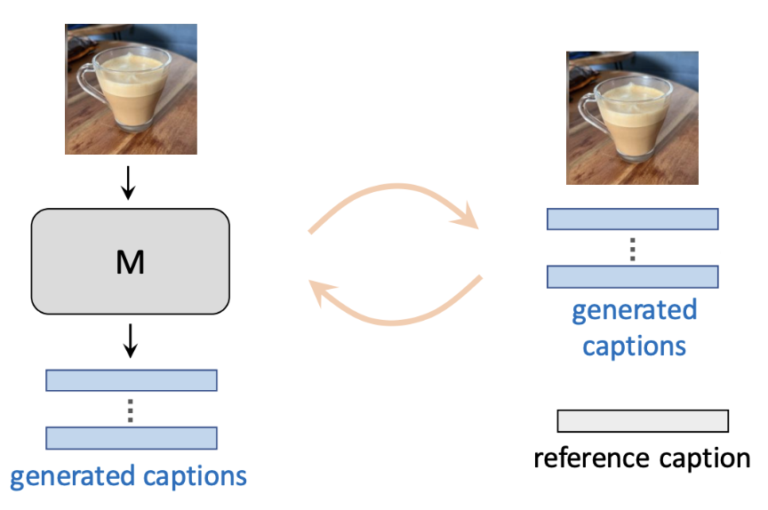
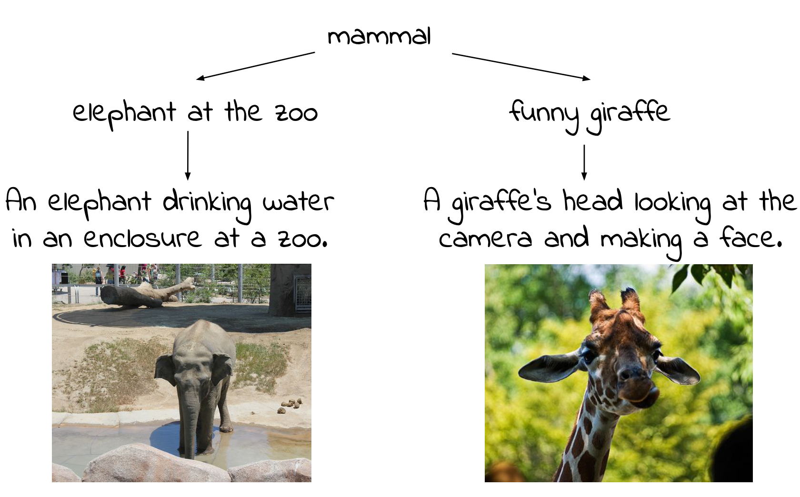
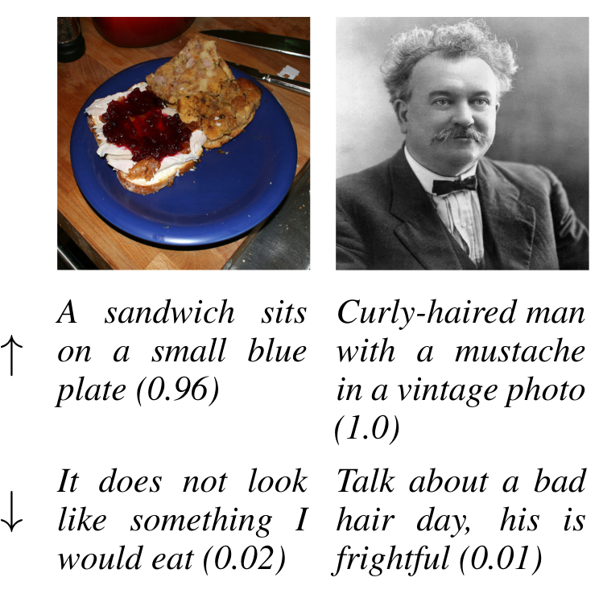
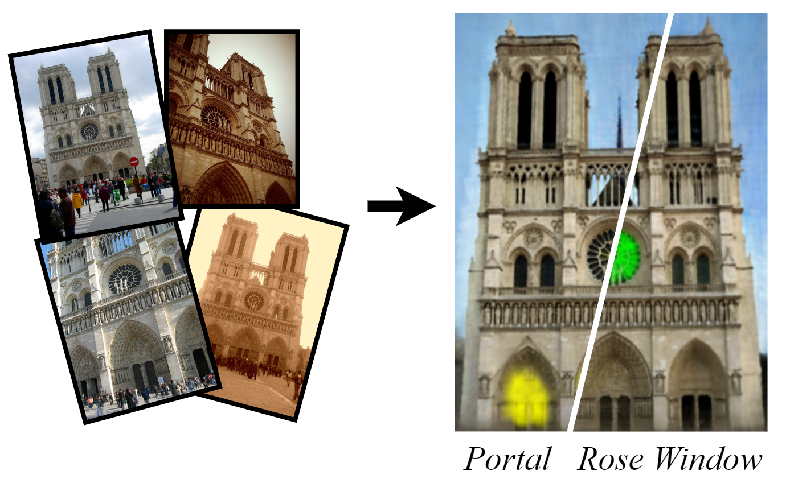
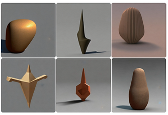
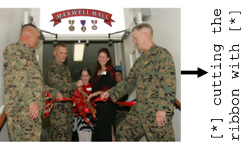
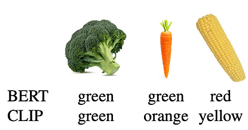

|
Morris Alper
I am a PhD student supervised by
Dr. Hadar Averbuch-Elor.
My research interests lie on the intersection of vision, language, and three-dimensional data, informed by how humans
perceive the world.
I began my PhD in March 2023; previously, I received my MSc with honors from Tel Aviv University in
Computer Science and my BSc from MIT with
a dual major in mathematics and linguistics. I also have experience working as a data scientist and
teaching
machine learning to industry professionals.
Email /
CV /
Scholar /
Twitter /
Bluesky /
GitHub /
LinkedIn /
ORCID
|
|
|

|
Mitigating Open-Vocabulary Caption Hallucinations
Assaf Ben-Kish,
Moran Yanuka,
Morris Alper,
Raja Giryes,
Hadar Averbuch-Elor
EMNLP, 2024
We propose a framework for addressing open-vocabulary hallucinations in image captioning models, including a new benchmark
and a reinforcement learning-based method to reduce such hallucinations.
|
|

|
Emergent Visual-Semantic Hierarchies in Image-Text Representations
Morris Alper,
Hadar Averbuch-Elor
ECCV (Oral), 2024
We show that foundation VLMs like CLIP model visual-semantic hierarchies, proposing the Radial Embedding framework for probing and optimizing this knowledge and the HierarCaps dataset of ground-truth image caption hierarchies.
|
|

|
ICC : Quantifying Image Caption Concreteness for Multimodal Dataset Curation
Moran Yanuka,
Morris Alper,
Hadar Averbuch-Elor,
Raja Giryes
ACL (Findings), 2024
We quantify image caption concreteness using information loss in foundation vision-language models,
and use this score to filter web-scale multimodal datasets.
|
|

|
HaLo-NeRF:
Learning Geometry-Guided Semantics for Exploring Unconstrained Photo Collections
Chen Dudai*,
Morris Alper*,
Hana Bezalel,
Rana Hanocka,
Itai Lang,
Hadar Averbuch-Elor
*Equal contribution
Eurographics, 2024
We learn a semantic localization field for textual descriptions over collections of in-the-wild
images depicting a large-scale scene.
|
|

|
Kiki or Bouba? Sound Symbolism in Vision-and-Language Models
Morris Alper,
Hadar Averbuch-Elor
NeurIPS (Spotlight), 2023
Presentation from IMVC 2024
By generating images using prompts containing pseudowords (nonsense words) and analyzing their
shapes,
we show that AI image generation models show sound-shape associations similar to those known from
human psychology.
|
|

|
Learning Human-Human Interactions in Images from Weak Textual Supervision
Morris Alper,
Hadar Averbuch-Elor
ICCV, 2023
We model human-human interaction understanding in images as free text
generation, provide a new benchmark and show how to learn this with weak supervision from Internet
image captions.
|
|

|
Is BERT Blind? Exploring the Effect of Vision-and-Language Pretraining on Visual Language
Understanding
Morris Alper*,
Michael Fiman*,
Hadar Averbuch-Elor
*Equal contribution
CVPR, 2023
We find that multimodally trained text encoders outperform unimodally
trained text encoders on visual reasoning in text.
|
Miscellanea
|
Featured in the News:
- Our work on the Kiki-Bouba effect and sound symbolism in AI models was featured
in the Haaretz newspaper (Hebrew language). I was also interviewed about this work on the
Kan Tarbut morning radio program
(recording link,
46:30-60:00, Hebrew language).
|
|
Blog Posts and Projects:
|
Awards and Honors:
-
As a high school student, I qualified to join the USA team at the International
Linguistics Olympiad (IOL) for three years (2008, 2009, 2011). In particular, in 2011 I won
1st place (gold medal)
on individual and team rounds in 2011 as well as receiving the Zhurinski Memorial Prize and a best
solution award. I also received a silver medal (tied for 6th place) in 2008 and our team won the
team round in 2009.
|
|